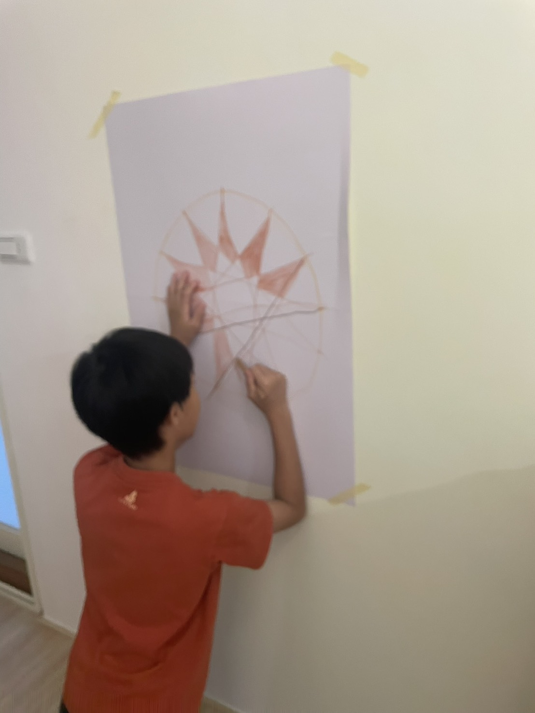
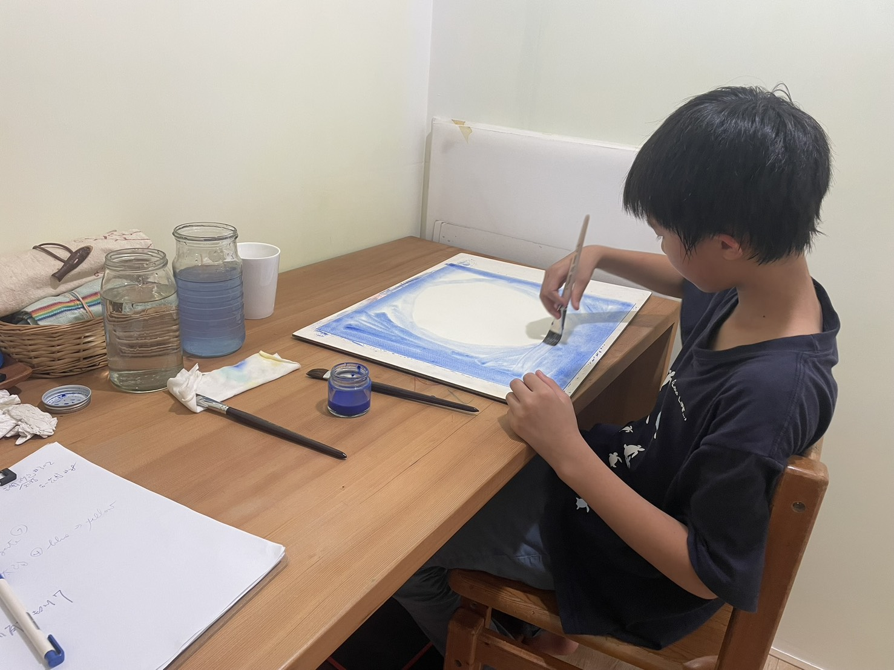
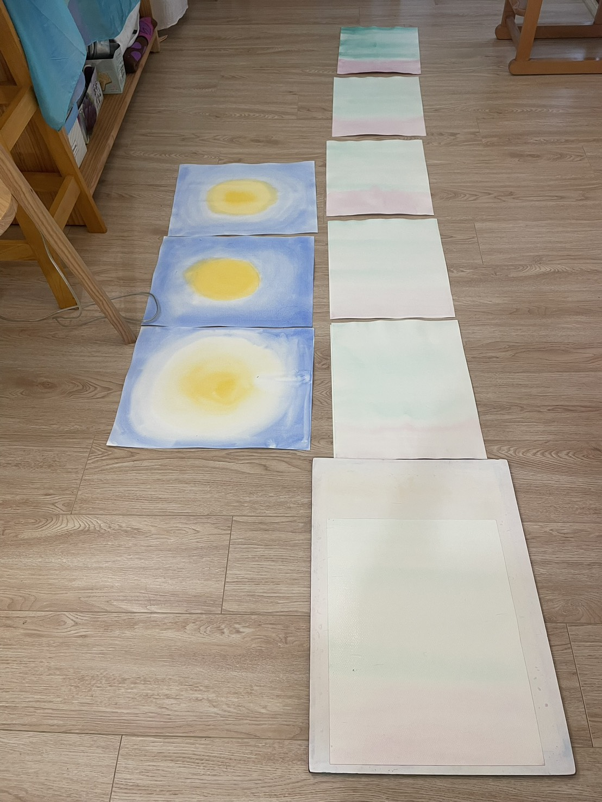

🌿 什麼是支持性教育輔正教育 Extra Lesson？
提供機會給有學習困難的孩子，讓他們和原型 (Archetype) 的人之形體再度連結，給予孩子一個屬於他們自己心與靈的真實映像 (Image)，一個他們在睡眠期間可以接受以及用來工作的映像。
透過身體律動的練習、沙包練習、銅棒的練習、濕水彩練習和形線畫的練習……等等，將原型帶回個案中，七歲以上的人皆適用。
🎯 輔正教育的核心問題
我們關心的，不是...
「孩子學不會什麼」
而是——
「有哪些發展基礎尚未成熟，正在限制他的學習表現？」
📅 輔正教育課程進行方式
⏱️ 課程頻率與時程
輔正教育課程 (Extra Lesson) 可以安排為每週一次一小時，或更頻繁的短時課程，適用於個別學生或團體，並可持續進行數個月、一年甚至更長時間。
🎨 課程內容與動作練習
涵蓋多種整合性動作練習，包括：早期發展性動作、沙包或球的練習、銅棒練習、動態繪畫，以及特定的繪畫練習等。隨著學生能力與技能的提升，課程會逐步加入適當具挑戰性的活動。
🔄 節律的建立與居家練習
課程的一個重要轉化元素在於「節律」的建立，透過每天安排15至20分鐘的居家練習（複習一項或多項已學過的練習），來加強學習效果。
👁️ 感官與動作發展
所有補充課程的活動，皆著重於感官－動作發展，包括：早期動作模式的整合、跨越身體中線的能力、精細與大肌肉動作協調、手眼協調，以及視覺與／或聽覺能力與記憶力的發展。
這些能力建立於幾個重要基礎之上：空間定向能力、靜止中的平衡（培養內在的平靜感）、身體圖像／身體地圖的建立，以及完全主導邊的充分發展。這些都是讓學生能夠輕鬆進行學科學習，並在情緒與社會層面維持穩定的關鍵能力。
透過強化這些基礎，學生能逐步排除學習上的阻礙，更順暢地運用自身自然、強而清晰的能力。當這樣的通道被開啟後，學生將更容易並且更有喜悅地學習新的知識、概念與想法。
當學生重新獲得學習的自由，也將培養出持久且終身的學習熱情。
📚 在學術上的對話與更多資訊
在學術上，可以和下列領域對話：
- 感覺整合
- 神經發展取向
- 具身認知
- 動作與認知的關聯研究
雖然輔正教育本身的實證研究，目前仍然有限，但它的核心假釋和上述幾個研究領域，方向是一致的。
（以上部分內容與資料源自 Waldorf Learning Support 官網）
陪伴過程剪影



💡 輔正教育服務流程
1. 輔正教育諮詢（起點）
面對孩子在學習、專注力或感官協調上的卡關，家長不必獨自摸索。我們首先透過諮詢，傾聽您的擔憂，釐清孩子發展基礎中需要支持的部分。由 陳曉霓老師 帶領。
2. 評估與一對一陪伴
經過初期的諮詢與評估後，若孩子適合進一步的長期支持，將由陳曉霓老師為孩子安排個別化的一對一輔正教育陪伴（Extra Lesson），透過律動、沙包與形線畫等練習，陪伴孩子跨越學習阻礙。
🌻 老師介紹
陳曉霓 老師
Extra Lesson 支持教育輔正教育老師 / 華德福輔正教育講師
現任
社團法人台灣華德福親子共學 理事｜五芒星星親子共學園 協同帶領老師｜親職教養諮詢 / 治療教育讀書會 帶領人｜Extra Lesson支持教育輔正教育老師｜華德福輔正教育 講師
專業背景
社團法人台灣華德福親子共學協會 創辦人暨理事長（2020-2026）｜宜蘭慈心華德福幼兒園六年主帶經驗｜台灣四年制治療教育與社會治療學程認證｜美國 Rudolf Steiner College 支持教育輔正教育學程認證、華德福幼教師資培訓認證｜空間動力 (Spatial Dynamics) 一階課程結業
準備好為孩子跨出第一步了嗎？
歡迎隨時透過我們的官方 LINE 帳號與我們聯繫，由陳曉霓老師為您預約諮詢與後續評估。